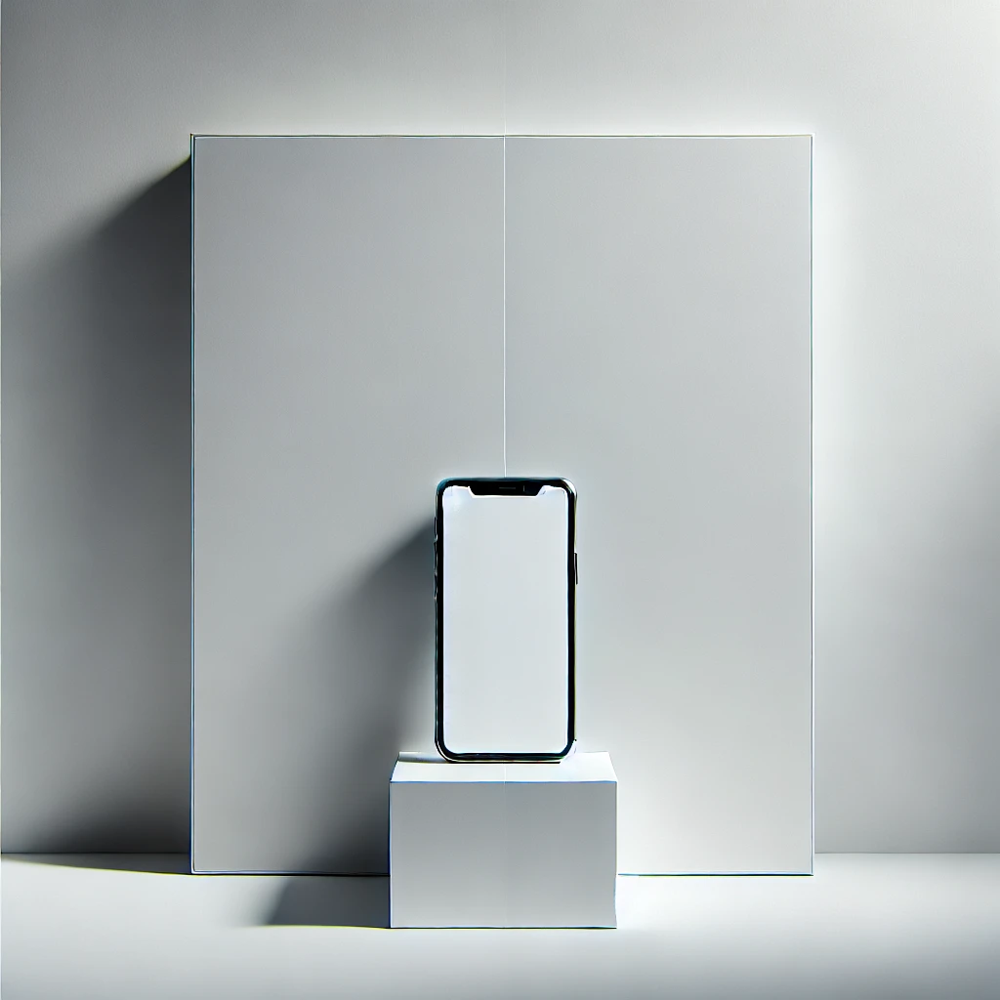

What is Clean Design?
Clean Design emphasizes simplicity, clarity, and usability by using minimalistic elements, ample white space, consistent typography, and a cohesive color palette. It aims to create an aesthetically pleasing and user-friendly interface that enhances the overall user experience.
Principles
- Simplicity: Eliminate unnecessary elements to highlight essential content.
- Clarity: Ensure information is easily understandable.
- Consistency: Maintain uniform styles and layouts across the webpage.
- White Space: Use ample empty space to reduce clutter and enhance readability.
- Typography: Select clear, readable fonts with appropriate sizes and spacing.
- Color Palette: Utilize a cohesive and limited set of colors to create visual harmony.
Examples
Here are some examples of clean design in action. Notice the use of white space, simple color schemes, and consistent typography that make the content easy to read and navigate.